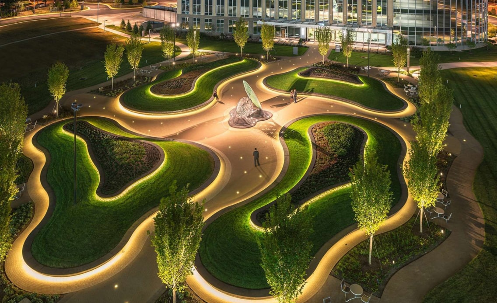
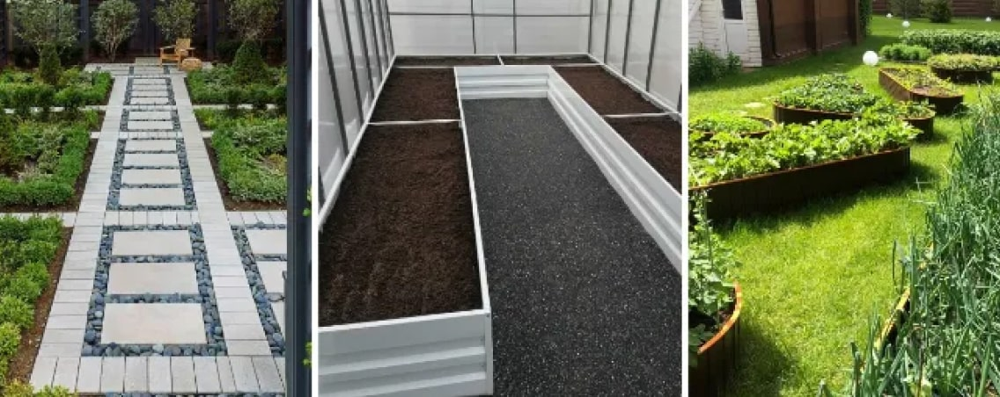

Из чего выложить дорожки на даче между грядками своими руками?
Устали разносить обувью грязь по участку после работы в огороде? Сорняки донимают своей прорастаемостью на грядках с овощами? Из этой статьи вы узнаете, из чего сделать дорожки между грядками, чтобы было не только красиво, но и полезно для урожая. Какое покрытие дешевле, эффективнее, в чем их плюсы/минусы и что предусмотреть заранее – читайте ниже.

Функции дорожек между грядками
Междурядья нужны для любых грядок. Они не только разделяют блоки выращиваемых растений, но и несут другие полезные функции:
- Предотвращают разрастаемость сорняков. Докучающие чертополохи, репейники и другие разновидности ненужных растений прорастают в почве при отсутствии меж. Также они могут сбрасывать семена, если их вовремя не удалить. Дорожки решают эту проблему. Дополнительной защитой послужат и ограждения для грядок, сделанные своими руками.
- Экономят расход воды. Непокрытые земляные тропинки способствуют быстрому испарению влаги с гряд, что влияет на частоту полива. Межи с настилом позволят вам не делать дополнительную подкормку урожая.
- Обеспечивают комфортный уход за урожаем. Когда почва с дорожек для грядок не разносится по участку и не прилипает к обуви, тогда и огородник получает больше удовольствия от работы. Не нужно ждать просыхания луж, чистить сапоги и подвергать себя опасности на скользкой и вязкой поверхности. Мощеные межи легко чистить: достаточно подмести их метлой или полить поверхность водой из шланга.
- Эстетичность. Оборудованные и аккуратные тропинки гармонично смотрятся на всей дачной территории. Всегда приятно провести по ним гостей, демонстрируя результаты своих трудов.

Делаем выводы: надежные межи необходимы не только для удобства огородника в дождливую погоду, но и для защиты урожая от нежданных гостей в виде растений-вредителей. Если у вас часть территории забетонирована или заасфальтирована, а огород хочется расширить – рассмотрите вариант постройки вертикальных клумб.
Что учесть при организации дорожек
Из чего сделать дорожки в огороде между грядками и клумбами? Материал должен отвечать следующим важным требованиям:
- экологически чистый, не влияющий на рост растений и состав почвы;
- устойчив к солнечным лучам и не пропускает свет;
- не разрушается от атмосферных осадков, не плесневеет и не гниет;
- имеет высокую проницаемость влаги и воздуха;
- с противоскользящим верхним слоем.
Если планируется перенос огорода из сезона в сезон, то выбираются стройматериалы, которые легко устанавливаются и демонтируются. Для дорожек между грядками на даче в первую очередь расчищают пространство от ненужных растений-вредителей, почву в проходах плотно утрамбовывают и выравнивают. Затем стелят подложку и сверху покрывают сыпучими, плиточными, резиновыми и другими стройматериалами (на усмотрение владельца).